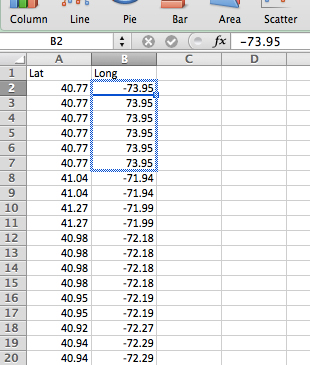
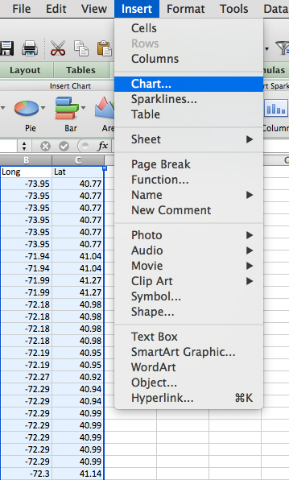

Excel Lab: the Process of Turning Numbers into Pictures
We're going to be recreating an example from Ben Fry's Computational Information Design, following his described "path from data to understanding."
Let's start from the beginning.
acquire parse filter mine represent refine interact
1. Go to this free zip code database
2. Download the first link here, called "All Locations (Multiple locations for some zipcodes)."
acquire parse filter mine represent refine interact
3. You should be able to open your newly downloaded CSV file in Excel. (What's a CSV?) You should end up with a spreadsheet of zip codes, cities, states, lat/long, etc. If this were a TSV file the parsing step would be only a tiny bit more complicated. If it were a PDF, there would be tears.
acquire parse filter mine represent refine interact
4. First we're going to filter this data to make it a bit more manageable. Go to Data> Filter
5. You should get a black pop-up box like this.
6. Uncheck "Select All," and then scroll down til you find "NY." Check just that one.
acquire parse filter mine represent refine interact
7. Now we only have the zip codes in New York! Great. But we are really just interested in the latitude and longitude columns. Copy those two columns and paste them into a new sheet.
acquire parse filter mine representrefine interact
8. So since zip codes are just points in space, let's chart these points and see what we get. Go to Insert > Chart.
9. A bunch of options should appear below. Click on the Scatter category, and then "Marked Scatter."
10. Oh dear. What is THAT?!

11. This is how visualization can be a good indicator that something is wrong with your data. Let's see what that weird outlier is in the top left corner. Go to Data> Sort. Sort in Descending and then Ascending.
12. Huh! Looks like while every other longitude point in New York is negative 70 something, this is positive. Seems wrong, right?
13. Well, if we mapped these coordinates on Google Maps we'd end up in Kyrgystan, so yeah, it's wrong.
14. Obviously if you were wrangling with this data for a real story, you'd want to make some phone calls and figure out why these bad values exist and what the real ones were. But for our purposes, we'll just change them to negative values. Add a minus sign in front of the first number, and then click and drag down the little box in the bottom right to change all the rest.
acquire parse filter mine represent refine interact
15. OK! This is starting to look better. But something is still wrong with our map.
16. It's flipped! That's because it's plotting latitude and longitude on the wrong axis. To fix this, let's switch the order. Select the Lat column and paste it to the right of the Long column.
17. Now selecting those two new columns, make a new chart.
18. There it is! A unprojected map of New York!

19. Now, can you make a map of the U.S. this way? What else would you need to filter out? (Hint: this zip code data contains more than the 48 contiguous states.)
20. Finally, why is this an *extremely* problematic map? Can we really convert latitude and longitude to X/Y coordinates on a flat surface? What are map projections, really?
Did You Know? Zip codes, as we have seen, are literal points in space, not geographic areas. Here's how the census turns those zip codes into a geographic entities.